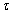
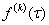
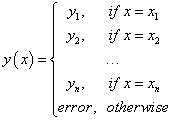
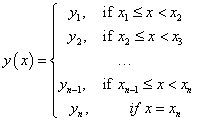
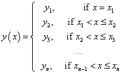

Intel® oneAPI Math Kernel Library Developer Reference - Fortran
This section explains the notation used for Data Fitting function descriptions. Spline notations are based on the terminology and definitions of [deBoor2001]. The Subbotin quadratic spline definition follows the conventions of [StechSub76]. The quasi-uniform partition definition is based on [Schumaker2007].
| Concept | Mathematical Notation |
|---|---|
Partition of interpolation interval [a, b] , where
|
{xi}i=1,...,n, where a = x1 < x2<... <xn = b |
Quasi-uniform partition of interpolation interval [a, b] |
Partition {xi}i=1,...,n which meets the constraint with a constant C defined as 1 ≤M/ m≤C, where
|
Vector-valued function of dimension p being fit |
ƒ(x) = (ƒ1(x),..., ƒp(x)) |
Piecewise polynomial (PP) function ƒ of order k+1 |
ƒ(x) ≔ Pi (x), if x ∈ [ xi, xi+1), i = 1,..., n-1 where
|
Function p agrees with function ƒ at the points {xi}i=1,...,n . |
For every point ζ in sequence {xi}i=1,...,n that occurs m times, the equality p(i-1)(ζ) = ƒ(i-1)(ζ) holds for all i = 1,...,m, where p(i)(t) is the derivative of the i-th order. |
The k-th divided difference of function ƒ at points xi,..., xi + k. This difference is the leading coefficient of the polynomial of order k+1 that agrees with ƒ at xi,..., xi + k. |
[ xi,..., xi + k] ƒ In particular,
|
A k-order derivative of interpolant ƒ(x) at interpolation site . |
 |
| Concept | Mathematical Notation |
|---|---|
Linear interpolant |
Pi(x) = c1, i + c2, i(x - xi), where
|
Piecewise parabolic interpolant |
Pi(x) = c1, i + c2, i(x - xi) + c3, i(x - xi)2, x ∈ [ xi, xi+1) Coefficients c1, i, c2, i, and c3, i depend on the conditions:
where parameter vi+1 depends on the interpolant being continuously differentiable: Pi-1(1)(xi) = Pi(1)(xi) |
Piecewise parabolic Subbotin interpolant |
P(x) = Pi(x) = c1,i+c2,i(x-xi)+c3,i(x-xi)2+d3,i((x-ti)+)2, where
Coefficients c1,i, c2,i, c3,i, and d3,i depend on the following conditions:
|
Piecewise cubic Hermite interpolant |
Pi(x) = c1,i + c2,i(x - xi) + c3,i(x - xi)2 + c4,i(x - xi)3, where
|
Piecewise cubic Bessel interpolant |
Pi(x) = c1,i + c2,i(x - xi) + c3,i(x - xi)2 + c4,i(x - xi)3, where
|
Piecewise cubic Akima interpolant |
Pi(x) = c1,i + c2,i(x - xi) + c3,i(x - xi)2 + c4,i(x - xi)3, where
|
Piecewise natural cubic interpolant |
Pi(x) = c1,i + c2,i(x - xi) + c3,i(x - xi)2 + c4,i(x - xi)3, where
|
Not-a-knot boundary condition. |
Parameters s1 and sn provide P1 = P2 and Pn-1 = Pn, so that the first and the last interior breakpoints are inactive. |
Free-end boundary condition. |
ƒ"(x1) = ƒ"(xn) = 0 |
Look-up interpolator for discrete set of points (x1, y1),..., (xn, yn) . |
 |
Step-wise constant continuous right interpolator. |
 |
Step-wise constant continuous left interpolator. |
 |